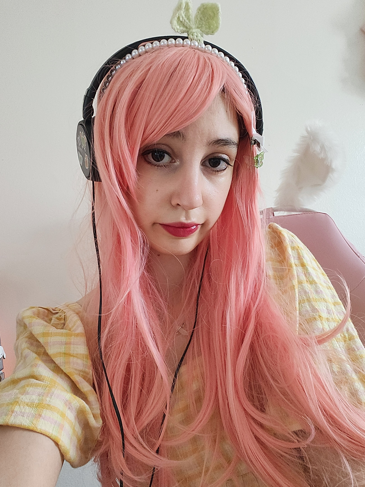

Welcome to FaeriaFawn!
FaeriaFawn is a cozy art brand created by Ria — a pixel-perfect dreamer who blends pastel palettes, magical creatures, and kawaii vibes into every design. From sparkly cursors to stitched borders, every detail is lovingly crafted to bring joy and whimsy to your screen.
This site is a growing showcase of Ria’s creations: pixel art, custom web assets, and enchanting UI experiments. Whether you're here for inspiration, collaboration, or just to explore a soft and sparkly world, you're warmly invited to stay a while.
About Me 🩷
I'm Ria! The founder and creative force behind faeriafawn, a cottagecore & nature themed art brand. I'm a British artist born in Hampshire, southern England in 2001. I'm neurodivergent and a big introvert that loves the countryside cozy life and everything about it!
How did faeriafawn come to life?
Faeriafawn, starting in 2025, is my own business with whom I am the sole creator. It grew from my love of blending gentle fantasy with everyday joy. The name combines faerie ( fairytale magic ), Ria ( my preferred nickname ), and fawn ( symbolizing Innocence, gentleness and nature ). Together, they reflect the heart of my work: whimsical, comforting and heartfelt. It's about building a little world of comfort and wonder that people can step into, through prints, stickers, or little goods that contain the whimsy and essence of nature.
What inspired me to start creating art?
I've always been drawn to soft, whimsical worlds and animals my whole life. I have always been inspired by storybooks, fairytales and cute everything. My interests influence a lot of my life , including my art that is inspired a lot by Disney and classic children's storybook illustrations, such as; peter rabbit, winnie the pooh, Alice in wonderland and Bambi, just to name a few. So I have been creating art for most of my life as a hobbyist. I'm also a huge fan of animation in general, my all time favourite show is My Little Pony, which I have always loved my whole life, and played a big role in inspiring me to create my own business with my own characters! Just like Lauren Faust (the creator of My Little Pony: Friendship is magic).